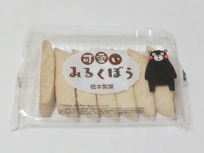

橋本製菓の可愛いみるくぼう。
2024/11/24

くまもんは可愛い。でもみるくぼうはどうなんでしょうね？
黒棒っぽいですが色が白いだけあって、黒棒とは全然違った感じでした。
砂糖と卵と脱脂粉乳味で、なんかなつかしい味だなと思いました。
熊本県玉名郡南関町関町1567
2024/11/24

くまもんは可愛い。でもみるくぼうはどうなんでしょうね？
黒棒っぽいですが色が白いだけあって、黒棒とは全然違った感じでした。
砂糖と卵と脱脂粉乳味で、なんかなつかしい味だなと思いました。